Wikipédia
Se perdre sur internet : l'exemple de wikipedia
⁂ Des images pixelisées
⁂ Un texte comportant beaucoup de notes
⁂ Des renvois rapides à une autre page
⁂ Des articles non finis
On ne s'y attarde pas et on continue notre chemin sur une autre page.
Ce projet fut "rédigé" sous forme de jeu : pour choisir les textes je suis partie du mot wikipédia
où j'ai sélectionné divers hyperliens de la page puis j'ai sélectionné divers autres hyperliens sur ces diverses pages, etc.
Les mots trouvés par ce cheminement sont assez aléatoires et très différents, ce qui peut ajouter une forme d'humour au projet.
▷ Font : ortica de collletttivo.it
▷ Juillet 2022
wikipédia

 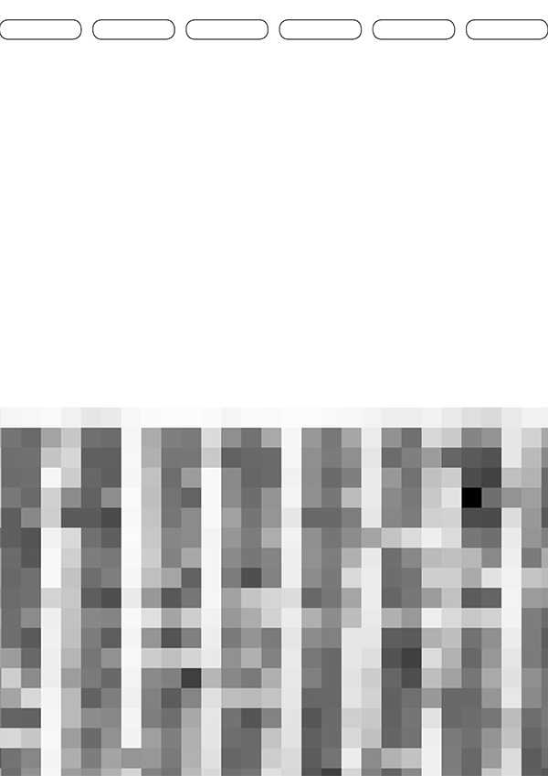
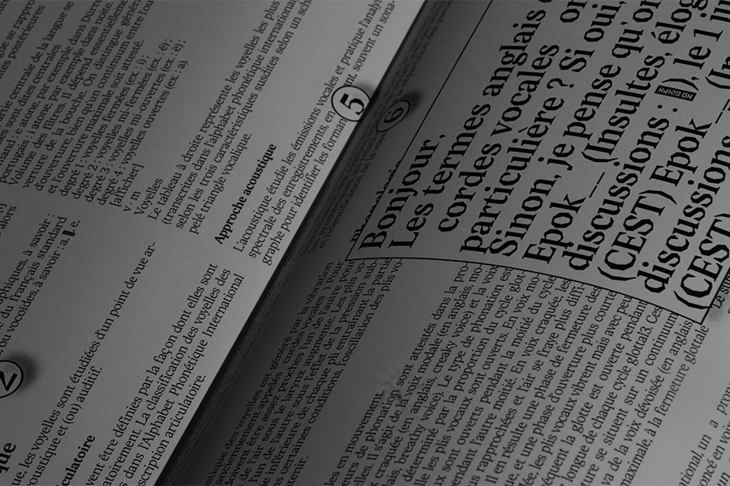
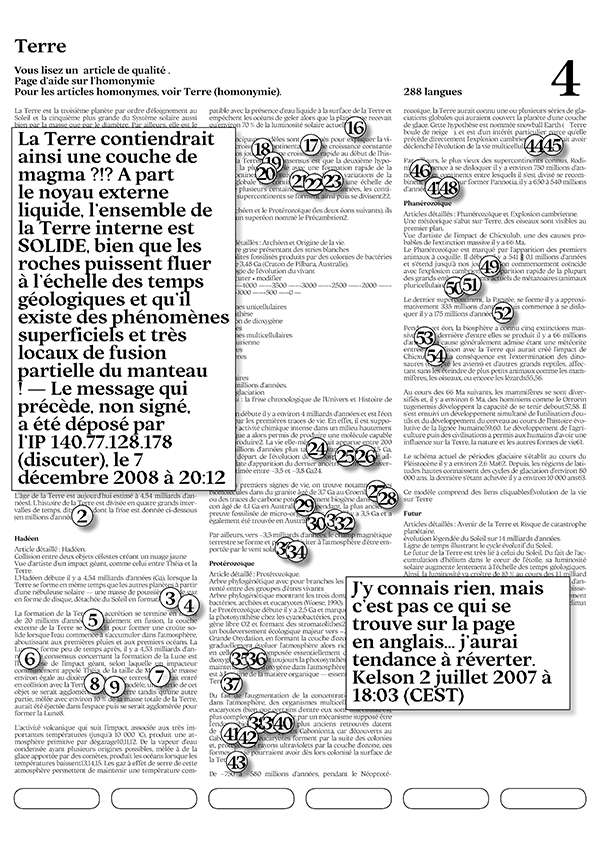
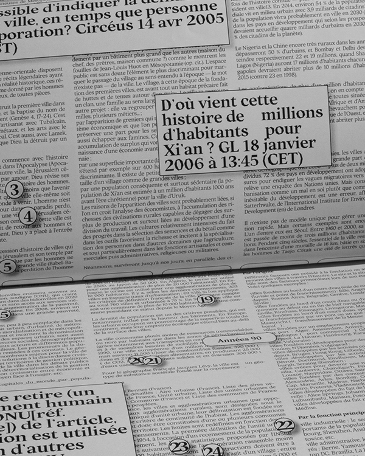
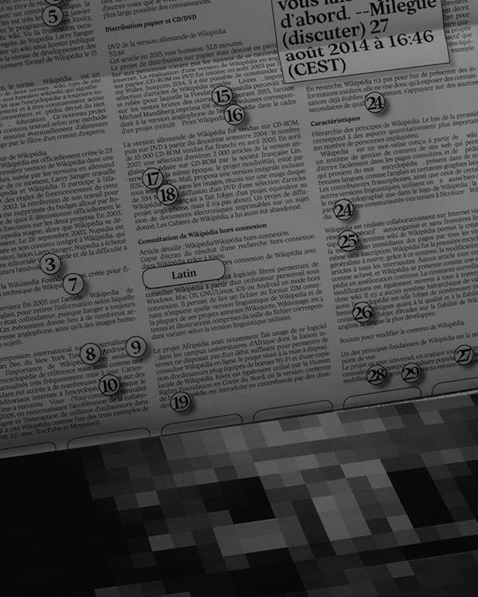
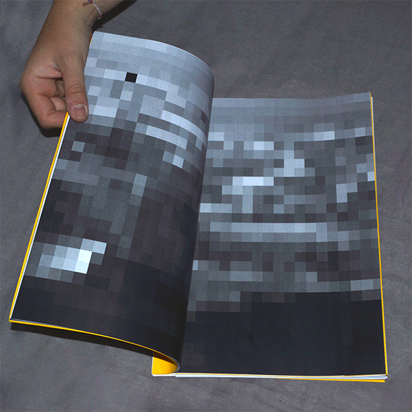
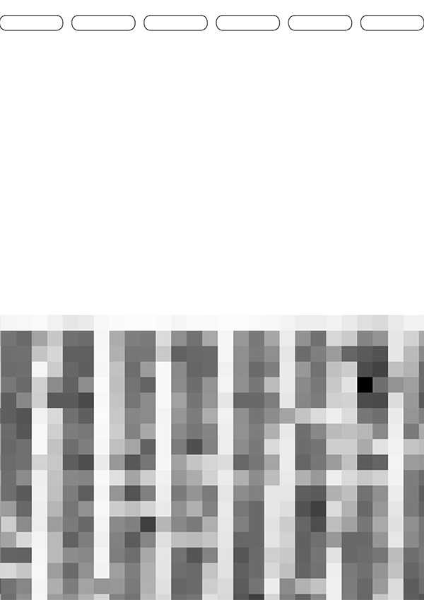
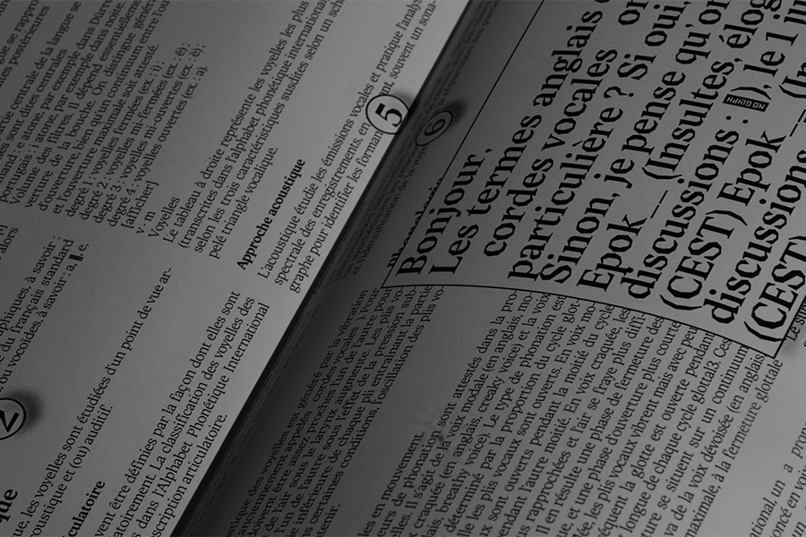
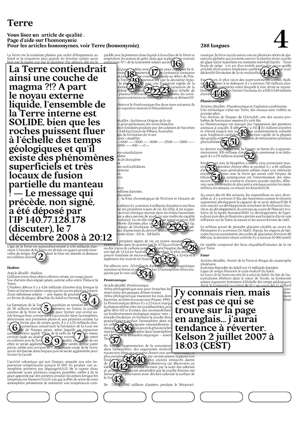
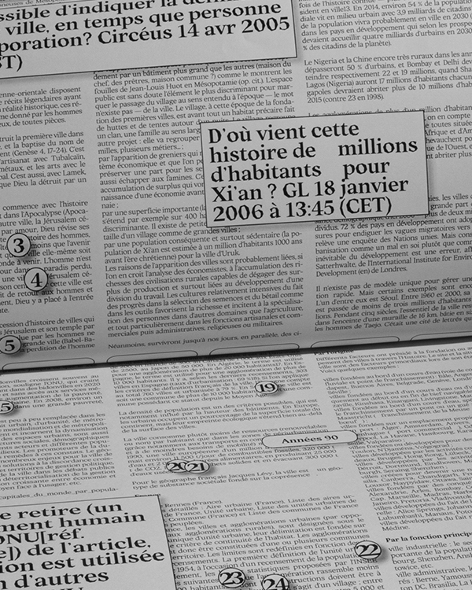
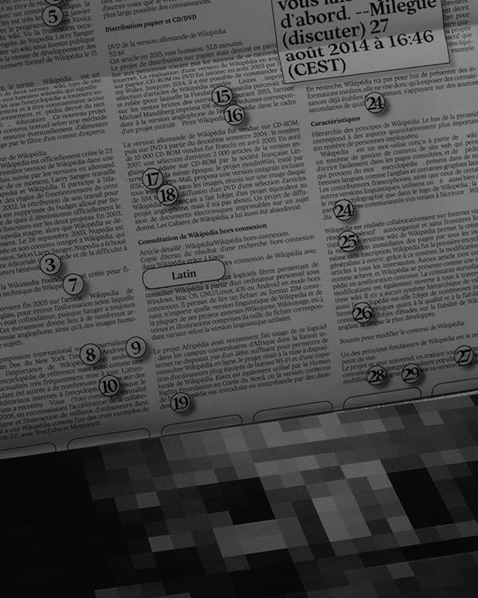
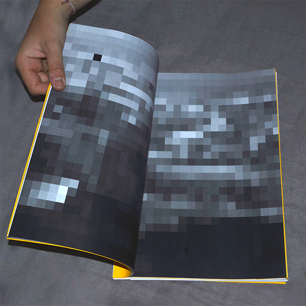